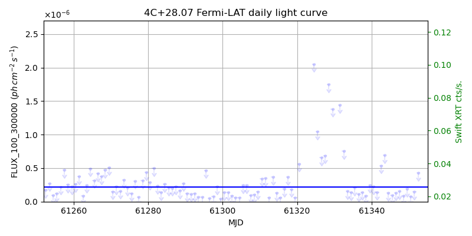
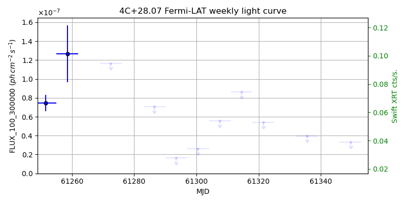
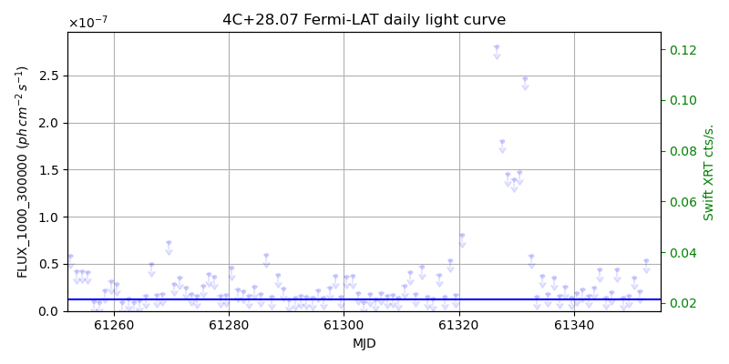
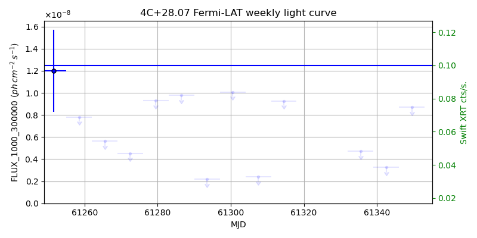

LAT Lightcurve site: https://fermi.gsfc.nasa.gov/ssc/data/access/lat/msl_lc/source/4C_p28d07
Swift site: https://www.swift.psu.edu/monitoring/source.php?source=4C+28.07
NED: Query
Time of last update of this page: UT: 2026-11-06 16:12 (MJD: 61350.676)
| Property | Value |
|---|---|
| R.A. | 2:37:52.32 |
| Dec. | 28:48:07.2 |
| z | 1.213 |
| 3FGL SpectrumType | LogParabola |
| 3FGL PL Index | |
| 3FGL Flux_100_300000 | 2.18e-07 1 / (s cm2) |
| 3FGL Flux_1000_300000 | 1.25e-08 1 / (s cm2) |
| 3FGL Flux >200 GeV | 2.06e-12 1 / (s cm2) |
| 3FGL Extrap. Crab >200 GeV | 0.01 |
| 3FGL Flux After EBL Absorption >200GeV | 1.61e-14 1 / (s cm2) |
| 3FGL EBL Crab Fraction >200GeV | 0.00 |

| MJD | dMJD | Flux | dFlux | Frac3FGL | FracCrab>200GeV | EBLFracCrab>200GeV |
|---|---|---|---|---|---|---|
| 61345.50 | 0.50 | 9.23e-08 | 0.00e+00 | 0.00 | 0.00 | 0.00 |
| 61346.50 | 0.50 | 1.32e-07 | 0.00e+00 | 0.00 | 0.00 | 0.00 |
| 61347.50 | 0.50 | 1.53e-07 | 0.00e+00 | 0.00 | 0.00 | 0.00 |
| 61348.50 | 0.50 | 8.65e-08 | 0.00e+00 | 0.00 | 0.00 | 0.00 |
| 61349.50 | 0.50 | 1.90e-07 | 0.00e+00 | 0.00 | 0.00 | 0.00 |

| MJD | dMJD | Flux | dFlux | Frac3FGL | FracCrab>200GeV | EBLFracCrab>200GeV |
|---|---|---|---|---|---|---|
| 61314.50 | 3.50 | 8.62e-08 | 0.00e+00 | 0.00 | 0.00 | 0.00 |
| 61321.50 | 3.50 | 5.43e-08 | 0.00e+00 | 0.00 | 0.00 | 0.00 |
| 61328.50 | 3.50 | 3.93e-07 | 0.00e+00 | 0.00 | 0.00 | 0.00 |
| 61335.50 | 3.50 | 3.97e-08 | 0.00e+00 | 0.00 | 0.00 | 0.00 |
| 61342.50 | 3.50 | 1.84e-07 | 0.00e+00 | 0.00 | 0.00 | 0.00 |

| MJD | dMJD | Flux | dFlux | Frac3FGL | FracCrab>200GeV | EBLFracCrab>200GeV |
|---|---|---|---|---|---|---|
| 61345.50 | 0.50 | 1.44e-08 | 0.00e+00 | 0.00 | 0.00 | 0.00 |
| 61346.50 | 0.50 | 1.96e-08 | 0.00e+00 | 0.00 | 0.00 | 0.00 |
| 61347.50 | 0.50 | 4.40e-08 | 0.00e+00 | 0.00 | 0.00 | 0.00 |
| 61348.50 | 0.50 | 1.38e-08 | 0.00e+00 | 0.00 | 0.00 | 0.00 |
| 61349.50 | 0.50 | 1.66e-08 | 0.00e+00 | 0.00 | 0.00 | 0.00 |

| MJD | dMJD | Flux | dFlux | Frac3FGL | FracCrab>200GeV | EBLFracCrab>200GeV |
|---|---|---|---|---|---|---|
| 61314.50 | 3.50 | 9.27e-09 | 0.00e+00 | 0.00 | 0.00 | 0.00 |
| 61321.50 | 3.50 | 1.95e-08 | 0.00e+00 | 0.00 | 0.00 | 0.00 |
| 61328.50 | 3.50 | 3.39e-08 | 0.00e+00 | 0.00 | 0.00 | 0.00 |
| 61335.50 | 3.50 | 4.73e-09 | 0.00e+00 | 0.00 | 0.00 | 0.00 |
| 61342.50 | 3.50 | 3.27e-09 | 0.00e+00 | 0.00 | 0.00 | 0.00 |
--------------------------------------------------------- Using user-supplied coords: 2:37:52.32 28:48:07.2 2000 --------------------------------------------------------- FLWO UT night of: 2026-11-07 Local Sid. @ Midnight: 02:42 Sunset (-15.0) (local, UT): 18:39 01:39 Sunrise (-15.0) (local, UT): 05:36 12:36 Moonrise (local, UT): 05:16 12:16 Moonset (local, UT): Moon phase: 0.04 --------------------------------------------------------- AzTime LSID UT Obj_el Obj_az Mn_el Mn_az Sep. --------------------------------------------------------- 18:39 21:20 01:39 22.7 69.0 -35.5 278.9 151.1 19:09 21:50 02:09 28.8 72.0 -41.6 283.5 151.4 19:39 22:20 02:39 34.9 74.8 -47.5 288.8 151.7 20:09 22:50 03:09 41.1 77.5 -53.3 295.3 152.0 20:39 23:20 03:39 47.4 80.3 -58.7 303.4 152.3 21:09 23:50 04:09 53.7 83.1 -63.5 313.9 152.6 21:39 00:20 04:39 60.1 86.1 -67.5 328.0 153.0 22:09 00:50 05:09 66.5 89.6 -70.0 346.2 153.3 22:39 01:20 05:39 72.9 94.1 -70.5 6.9 153.6 23:09 01:51 06:09 79.2 101.6 -68.8 26.6 153.9 23:39 02:21 06:39 85.2 123.6 -65.4 42.5 154.3 00:09 02:51 07:09 86.3 223.3 -60.9 54.4 154.6 00:39 03:21 07:39 80.6 255.7 -55.8 63.5 154.9 01:09 03:51 08:09 74.3 264.6 -50.2 70.6 155.2 01:39 04:21 08:39 67.9 269.5 -44.4 76.4 155.5 02:09 04:51 09:09 61.5 273.1 -38.4 81.4 155.8 02:39 05:21 09:39 55.1 276.2 -32.4 85.8 156.2 03:09 05:51 10:09 48.8 279.1 -26.3 89.9 156.4 03:39 06:21 10:39 42.5 281.9 -20.2 93.7 156.7 04:09 06:51 11:09 36.3 284.6 -14.2 97.5 157.0 04:39 07:21 11:39 30.1 287.4 -8.1 101.2 157.3 05:09 07:52 12:09 24.1 290.3 -1.2 105.0 157.5 05:36 08:19 12:36 18.7 293.1 3.4 108.6 157.8 --------------------------------------------------------- Dark hours >55 deg.: 5.41 srcstart (UT): 2026-11-07 04:15 srcend (UT): 2026-11-07 09:39